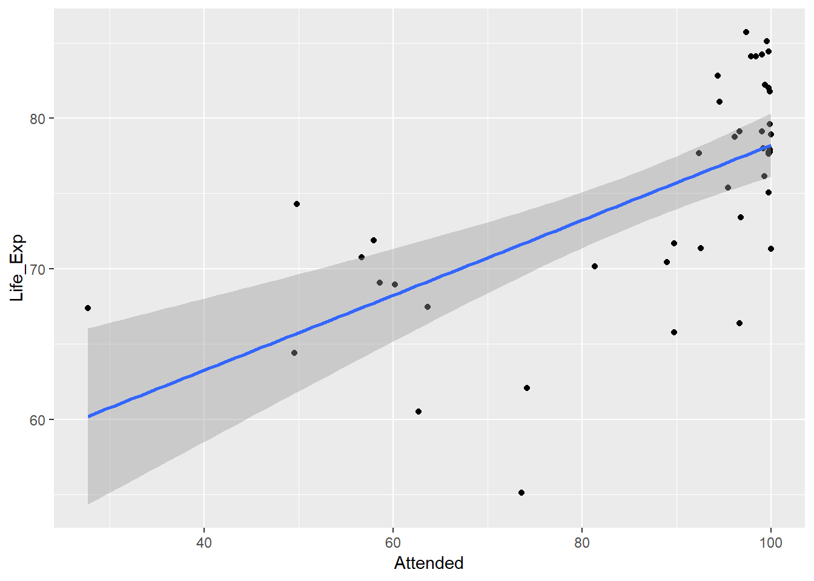
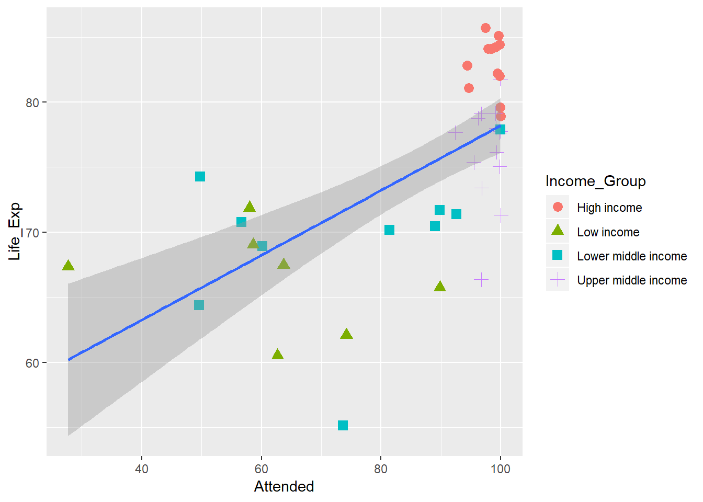

Demo of something.
Using the World Bank Development Indicators Excel download from:
http://datatopics.worldbank.org/world-development-indicators/
knitr::opts_chunk$set(echo = TRUE, eval = TRUE, include = TRUE, cache = FALSE)
library(tidyverse)
library(RSQLite)indicators <-
read_csv("Data/indicators.csv") %>%
mutate(Country_Code = as.factor(Country_Code),
Indicator_Code = as.factor(Indicator_Code))## Parsed with column specification:
## cols(
## Country_Name = col_character(),
## Country_Code = col_character(),
## Indicator_Name = col_character(),
## Indicator_Code = col_character(),
## Yr2014 = col_double(),
## Yr2015 = col_double(),
## Yr2016 = col_double(),
## Yr2017 = col_double(),
## Yr2018 = col_double()
## )country <-
read_csv("Data/country.csv") %>%
mutate(Country_Code = as.factor(Country_Code),
Region = as.factor(Region),
Income_Group = as.factor(Income_Group))## Parsed with column specification:
## cols(
## Country_Code = col_character(),
## Region = col_character(),
## Income_Group = col_character()
## )For each question below (not the first), find the answer first using pure SQL. Then check you can do the same using dplr operating on the data frames.
Use `dbplyr (https://db.rstudio.com/dplyr/) with the dplyr commands you have already written and check how closely the SQL it generates matches yours.
indicators %>% summarise(Num_indicators = n_distinct(Indicator_Code))## # A tibble: 1 x 1
## Num_indicators
## <int>
## 1 1599indicators %>% summarise(Num_countries = n_distinct(Country_Code))## # A tibble: 1 x 1
## Num_countries
## <int>
## 1 264Dplyr solution:
country %>% filter(!is.na(Region)) %>% select(Region) %>% unique()## # A tibble: 7 x 1
## Region
## <fct>
## 1 Latin America & Caribbean
## 2 South Asia
## 3 Sub-Saharan Africa
## 4 Europe & Central Asia
## 5 Middle East & North Africa
## 6 East Asia & Pacific
## 7 North Americaindicators %>%
select(Country_Code, Country_Name) %>%
unique() %>%
arrange(Country_Code) %>%
head(50)## # A tibble: 50 x 2
## Country_Code Country_Name
## <fct> <chr>
## 1 ABW Aruba
## 2 AFG Afghanistan
## 3 AGO Angola
## 4 ALB Albania
## 5 AND Andorra
## 6 ARB Arab World
## 7 ARE United Arab Emirates
## 8 ARG Argentina
## 9 ARM Armenia
## 10 ASM American Samoa
## # ... with 40 more rowscountry %>%
filter(is.na(Region)) %>%
select(Country_Code) %>%
unique()## # A tibble: 46 x 1
## Country_Code
## <fct>
## 1 ARB
## 2 CEB
## 3 CSS
## 4 EAP
## 5 EAR
## 6 EAS
## 7 ECA
## 8 ECS
## 9 EMU
## 10 EUU
## # ... with 36 more rowsDplyr solution:
indicators %>%
filter(str_detect(Indicator_Name, "(?i)life expectancy")) %>% # (?i) says ignore case
select(Indicator_Name, Indicator_Code) %>%
unique()## # A tibble: 3 x 2
## Indicator_Name Indicator_Code
## <chr> <fct>
## 1 Life expectancy at birth, female (years) SP.DYN.LE00.FE.IN
## 2 Life expectancy at birth, male (years) SP.DYN.LE00.MA.IN
## 3 Life expectancy at birth, total (years) SP.DYN.LE00.INindicators %>%
filter(str_detect(Indicator_Name, "(?i)birth"),
str_detect(Indicator_Name, "(?i)attend")) %>%
select(Indicator_Name, Indicator_Code) %>%
unique()## # A tibble: 1 x 2
## Indicator_Name Indicator_Code
## <chr> <fct>
## 1 Births attended by skilled health staff (% of total) SH.STA.BRTC.ZSindicators %>%
filter(Indicator_Code == "SP.DYN.LE00.FE.IN") %>%
summarise(Av_Life_Exp = mean(Yr2016, na.rm = TRUE),
Min_Life_Exp = min(Yr2016, na.rm = TRUE),
Max_Life_Exp = max(Yr2016, na.rm = TRUE))## # A tibble: 1 x 3
## Av_Life_Exp Min_Life_Exp Max_Life_Exp
## <dbl> <dbl> <dbl>
## 1 74.5 52.4 87.3indicators %>%
filter(Indicator_Code == "SP.DYN.LE00.FE.IN") %>%
filter(Yr2017 == min(Yr2017, na.rm = TRUE)) %>%
select(Country_Name, Yr2017)## # A tibble: 1 x 2
## Country_Name Yr2017
## <chr> <dbl>
## 1 Sierra Leone 52.8plt.df <- indicators %>%
select(Country_Code, Indicator_Code, Yr2016) %>%
filter(Indicator_Code == "SH.STA.BRTC.ZS" | Indicator_Code == "SP.DYN.LE00.FE.IN") %>%
filter(!is.na(Yr2016)) %>%
spread(key = Indicator_Code, value = Yr2016) %>%
drop_na() %>%
rename(Life_Exp = SP.DYN.LE00.FE.IN, Attended = SH.STA.BRTC.ZS)
ggplot(plt.df) +
geom_point(aes(Attended, Life_Exp)) +
geom_smooth(aes(Attended, Life_Exp), method = lm)
plt.df <- indicators %>%
select(Country_Code, Indicator_Code, Yr2016) %>%
filter(Indicator_Code == "SH.STA.BRTC.ZS" | Indicator_Code == "SP.DYN.LE00.FE.IN") %>%
filter(!is.na(Yr2016)) %>%
spread(key = Indicator_Code, value = Yr2016) %>%
drop_na() %>%
rename(Life_Exp = SP.DYN.LE00.FE.IN, Attended = SH.STA.BRTC.ZS) %>%
left_join(country)## Joining, by = "Country_Code"## Warning: Column `Country_Code` joining factors with different levels,
## coercing to character vectorggplot(plt.df) +
geom_point(aes(Attended, Life_Exp, color = Income_Group, shape = Income_Group), size = 3) +
geom_smooth(aes(Attended, Life_Exp), method = lm)
Print the countries with life expectancy > 85 together with their region and Income group.
indicators %>%
select(Country_Code, Country_Name, Indicator_Code, Yr2016) %>%
filter(Indicator_Code == "SP.DYN.LE00.FE.IN") %>%
filter(Yr2016 > 85) %>%
rename(Fem_Life_Exp = Yr2016) %>%
left_join(country) %>%
select(Country_Name, Region, Fem_Life_Exp) %>%
arrange(desc(Fem_Life_Exp))## Joining, by = "Country_Code"## Warning: Column `Country_Code` joining factors with different levels,
## coercing to character vector## # A tibble: 11 x 3
## Country_Name Region Fem_Life_Exp
## <chr> <fct> <dbl>
## 1 Hong Kong SAR, China East Asia & Pacific 87.3
## 2 Japan East Asia & Pacific 87.1
## 3 Macao SAR, China East Asia & Pacific 86.8
## 4 Spain Europe & Central Asia 86.3
## 5 France Europe & Central Asia 85.7
## 6 Italy Europe & Central Asia 85.6
## 7 Switzerland Europe & Central Asia 85.6
## 8 Korea, Rep. East Asia & Pacific 85.4
## 9 Luxembourg Europe & Central Asia 85.4
## 10 Bermuda North America 85.1
## 11 Singapore East Asia & Pacific 85.1Rename the life expectancy column to something meaningful and order by region and life expectancy.
indicators %>%
select(Country_Code, Country_Name, Indicator_Code, Yr2016) %>%
filter(Indicator_Code == "SP.DYN.LE00.FE.IN") %>%
left_join(country) %>%
select(Country_Name, Region, Income_Group, Yr2016) %>%
group_by(Income_Group, Region) %>%
summarise(Av_Fem_Life_Exp = mean(Yr2016, na.rm = TRUE)) %>%
drop_na() %>%
arrange(Region, desc(Av_Fem_Life_Exp))## Joining, by = "Country_Code"## Warning: Column `Country_Code` joining factors with different levels,
## coercing to character vector## Warning: Factor `Income_Group` contains implicit NA, consider using
## `forcats::fct_explicit_na`## Warning: Factor `Region` contains implicit NA, consider using
## `forcats::fct_explicit_na`## # A tibble: 24 x 3
## # Groups: Income_Group [4]
## Income_Group Region Av_Fem_Life_Exp
## <fct> <fct> <dbl>
## 1 High income East Asia & Pacific 83.6
## 2 Upper middle income East Asia & Pacific 77.1
## 3 Low income East Asia & Pacific 75.1
## 4 Lower middle income East Asia & Pacific 71.7
## 5 High income Europe & Central Asia 83.3
## 6 Upper middle income Europe & Central Asia 77.8
## 7 Lower middle income Europe & Central Asia 75.5
## 8 Low income Europe & Central Asia 74.2
## 9 High income Latin America & Caribbean 80.2
## 10 Upper middle income Latin America & Caribbean 77.3
## # ... with 14 more rows